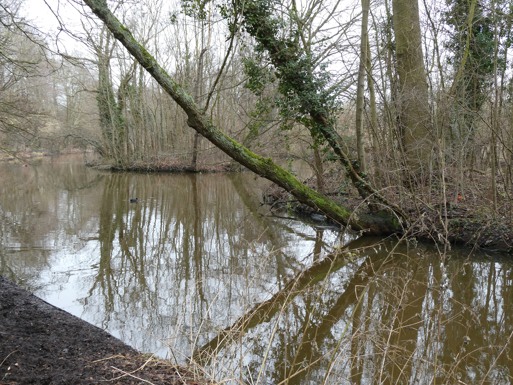
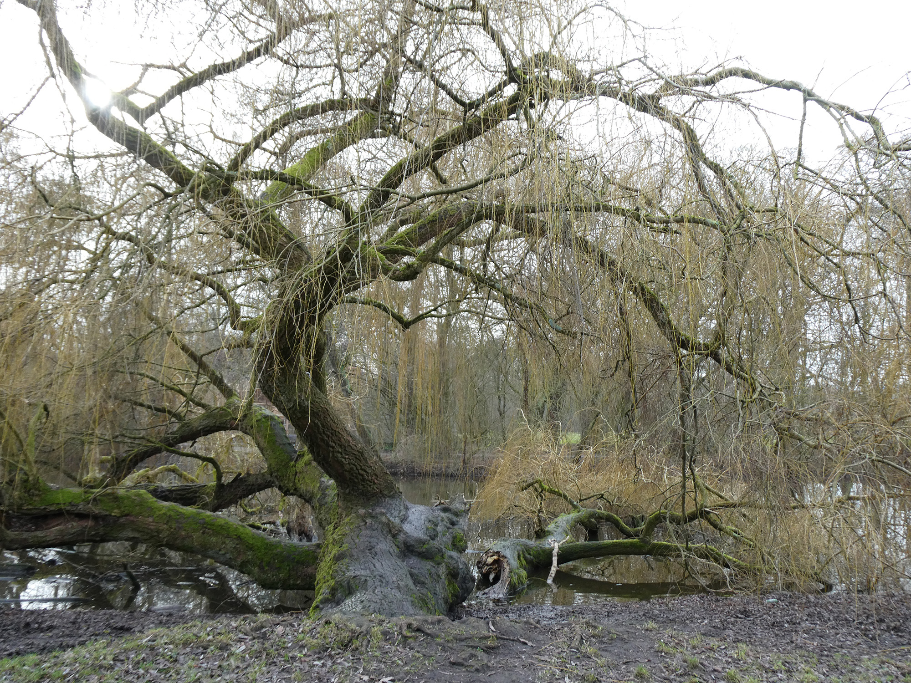
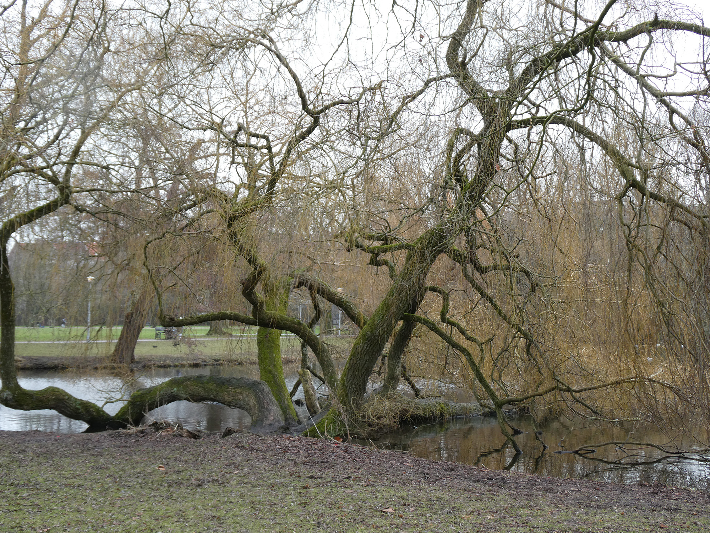
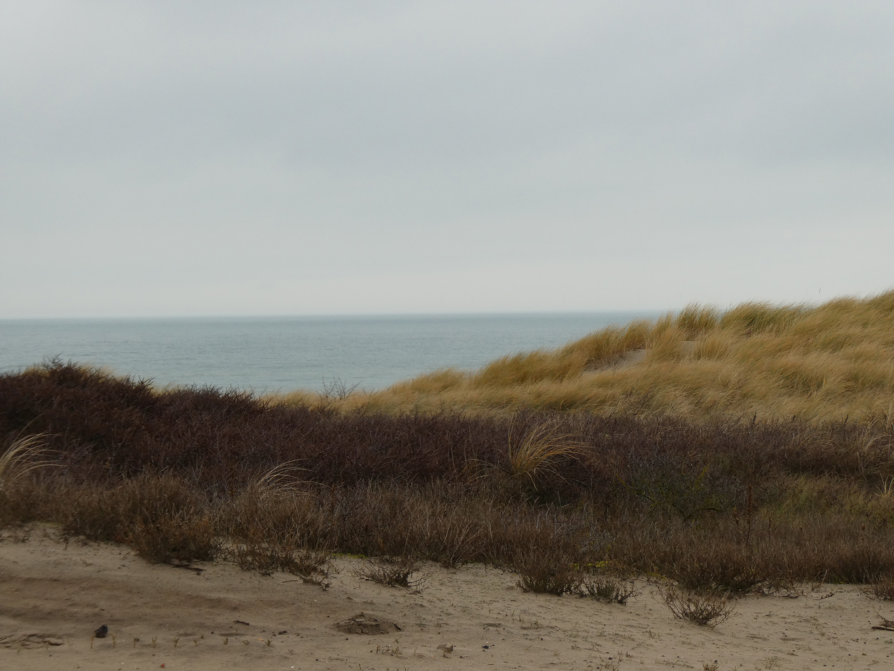
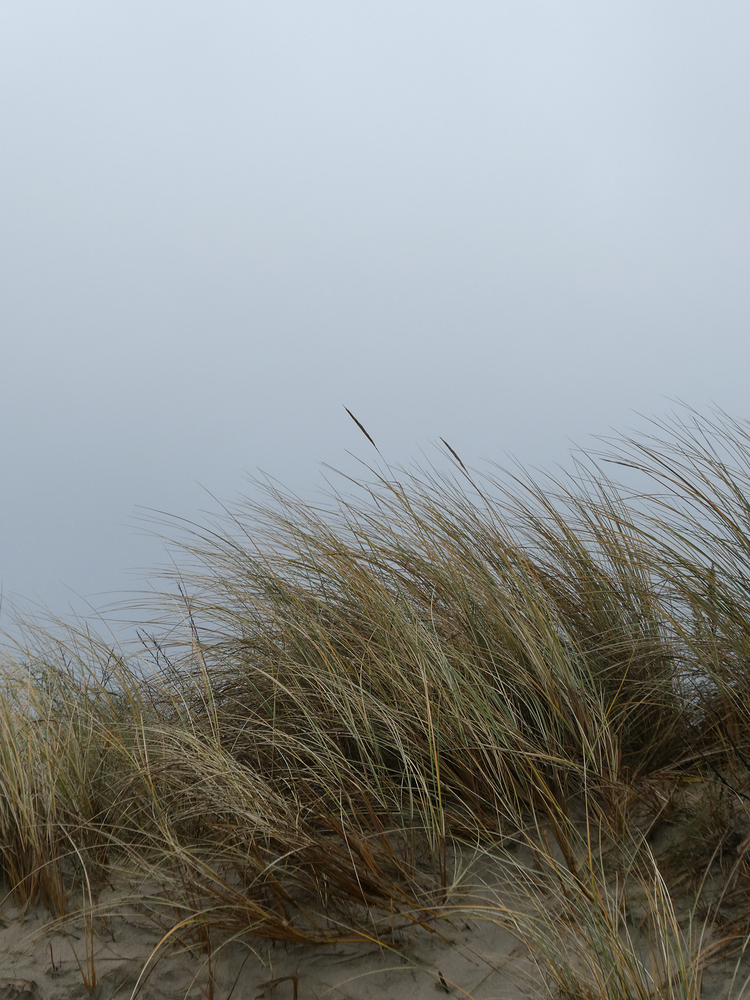
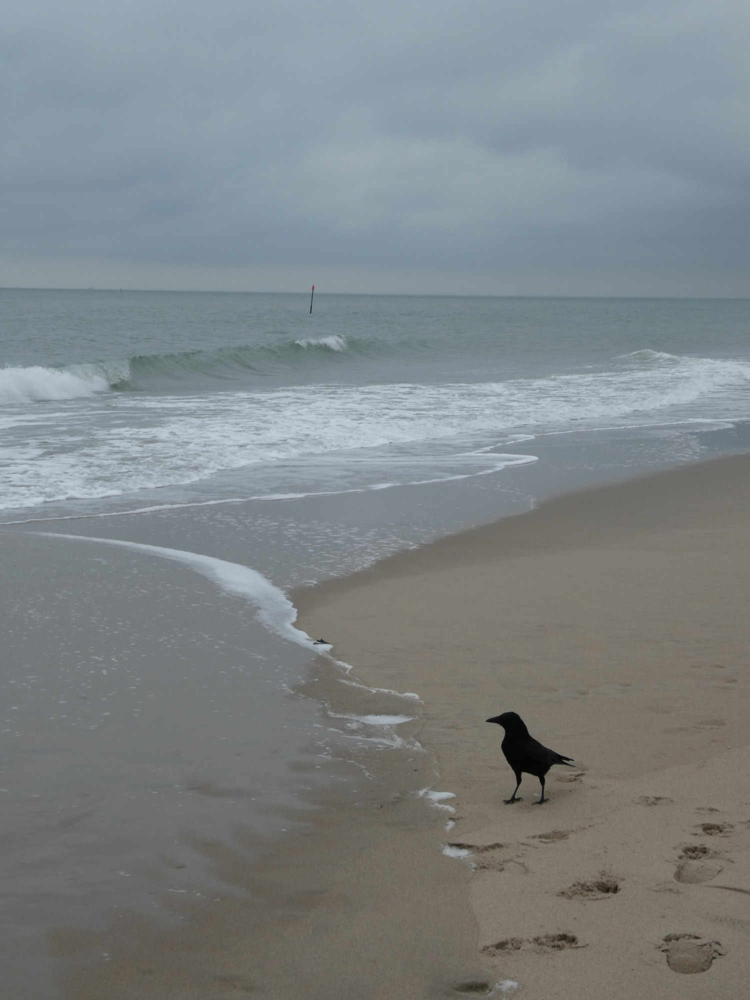
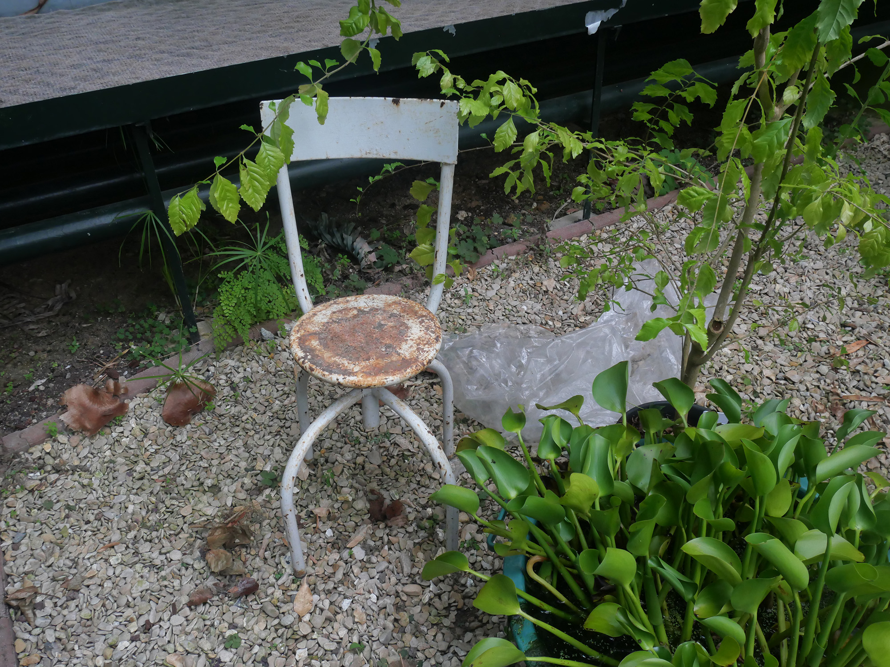

Amsterdam



La Haye



Fontainebleau


(819) 968-0872
delphine.dv@videotron.ca
Par mes projets, j’espère transmettre une certaine douceur. Jusqu’à maintenant, mes projets se veulent minimalistes, dans l’idée que ce qui est mis en valeur est ce qui préexistait au projet, qu’il s’agisse du paysage ou du bâtiment existant dans un contexte de patrimoine. La matérialité occupe également une place centrale dans ma pratique. Avant d’être décorative, elle est souvent à l’essence même du concept, agissant comme un véritable vecteur de création.
Dans ma future pratique, je souhaite continuer à travailler sur des projets où le respect du contexte et où l’expérience de l’usager s’entrelacent de manière cohérente et durable.
Formation
2023-2026
Baccalauréat en architecture
Université Laval et ENSA Paris-Malaquais
2021-2023
Diplôme d'études collégiales en sciences de la nature
CÉGEP de Sainte-Foy
Expérience
2025
Auxiliaire de recherche à l'Université Laval pour le projet « La bibliothèque Georges Teyssot », projet supervisé par le professeur Samuel Bernier-Lavigne et par la chargée d'enseignement Ariane Ouellet-Pelletier
Langues
Français, langue maternelle
Anglais, langue seconde

Amsterdam



La Haye


Fontainebleau
